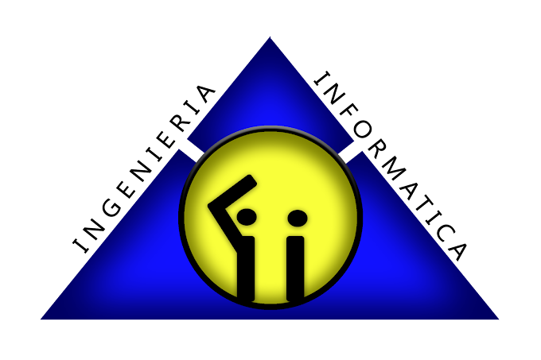

Carrera de Ingeniería Informática - UNSXX
La Carrera de Ingeniería Informática de la Universidad Nacional Siglo XX surge como respuesta a la creciente necesidad de formar profesionales capaces de afrontar los desafíos tecnológicos de la sociedad moderna. A lo largo de los años, la carrera ha fortalecido su formación académica incorporando conocimientos en programación, bases de datos, redes de computadoras, inteligencia artificial, seguridad informática y desarrollo de software.
Su propuesta académica busca combinar la formación científica con la aplicación práctica de la tecnología, permitiendo que los estudiantes participen en proyectos, investigaciones y actividades orientadas a la solución de problemas reales mediante herramientas informáticas.
La carrera forma profesionales con capacidad de innovar, desarrollar sistemas informáticos, administrar infraestructuras tecnológicas y liderar proyectos relacionados con las ciencias de la computación, contribuyendo al desarrollo tecnológico y social de Bolivia.
Gracias al trabajo de docentes, estudiantes y autoridades universitarias, la Carrera de Ingeniería Informática de la UNSXX ha consolidado su calidad académica, obteniendo procesos de acreditación y reconocimiento dentro del sistema universitario boliviano.
Volver al Menú